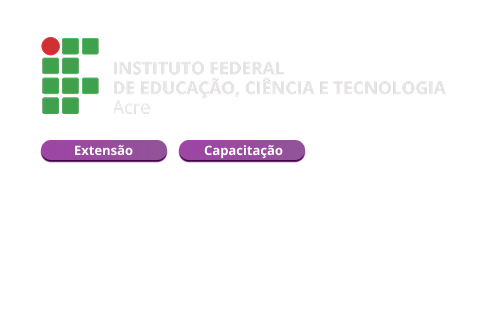

SICOOBUni Acre
Sicoob Uni Acre
Estagiário
Apoio à análise de dados e à melhoria de processos, com desenvolvimento de indicadores, dashboards e soluções de apoio à tomada de decisão.

TRAJETÓRIA
Minha trajetória combina experiência profissional em tecnologia, formação prática, projetos acadêmicos e liderança desenvolvida ao longo de anos no Movimento Escoteiro.
CARREIRA
Estagiário
Apoio à análise de dados e à melhoria de processos, com desenvolvimento de indicadores, dashboards e soluções de apoio à tomada de decisão.
Estagiário
Atuação com Business Intelligence e análise de dados, contribuindo na criação e manutenção de dashboards, tratamento de informações e automação de análises e relatórios.
Estagiário • Tecnologia da Informação
Apoio ao acompanhamento de testes de programas, instalação e suporte a redes, computadores, softwares e comunicação de dados, além de suporte técnico aos usuários.
FORMAÇÃO PRÁTICA
Graduação focada em desenvolvimento de aplicações para a web, programação, banco de dados e construção de sistemas.

Capacitação full stack com experiência prática em desenvolvimento em equipe e construção de sistemas reais.

Experiência formativa ligada à tecnologia, programação e aplicação prática de conceitos de computação.
ALÉM DO CÓDIGO
Trajetória de aproximadamente oito anos no Movimento Escoteiro, atualmente no Clã Pioneiro Estrela Altaneira. A experiência contribuiu para liderança, organização, responsabilidade, trabalho em equipe e serviço à comunidade.
Presidente da COMAD em 2024 • Vice-presidente em 2025 e 2026